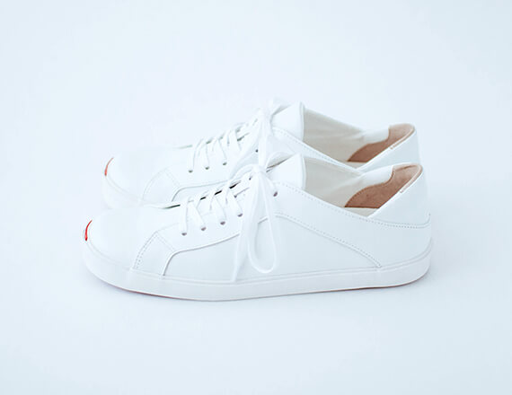

design
デザイン

feature
特徴
「スニーカーも幅が広すぎて、足が疲れてしまうんです。」
そんなお客様の声を沢山お聞きしてきました。
市販ではなかなか見つけることが困難な「幅細甲低」の方のためのスニーカー。
タルタルガ 松本 が木型から試行錯誤を繰り返し、ついに完成致しました。
「デザインはシンプルでありインパクトがあるように」
「大人の女性が履いても馴染み良く洗練された雰囲気であるように」
随所に譲らないこだわりを盛り込んで、タルタルガらしいスニーカーが誕生しました。
feature 01
細さへの挑戦
一般的な女性向けスニーカーのワイズはDサイズ。紐で調節をしたり、履き口を小さめにすることで、幅の細めの足にも対応してきたというのが現状です。スニーカーメーカーに自作の木型を持ち込んで製作依頼をした時、「え！こんなに細くて良いのですか！？」と驚かれてしまいました。 それも当然、タルタルガのスニーカーは約AA。 一般的なスニーカーより約2cm周り寸法が小さいのです。
feature 01
細さへの挑戦
一般的な女性向けスニーカーのワイズはDサイズ。紐で調節をしたり、履き口を小さめにすることで、幅の細めの足にも対応してきたというのが現状です。スニーカーメーカーに自作の木型を持ち込んで製作依頼をした時、「え！こんなに細くて良いのですか！？」と驚かれてしまいました。 それも当然、タルタルガのスニーカーは約AA。 一般的なスニーカーより約2cm周り寸法が小さいのです。
feature 01
細さへの挑戦
一般的な女性向けスニーカーのワイズはDサイズ。紐で調節をしたり、履き口を小さめにすることで、幅の細めの足にも対応してきたというのが現状です。スニーカーメーカーに自作の木型を持ち込んで製作依頼をした時、「え！こんなに細くて良いのですか！？」と驚かれてしまいました。 それも当然、タルタルガのスニーカーは約AA。 一般的なスニーカーより約2cm周り寸法が小さいのです。
spec
靴の情報
-
サイズ
22.0cm, 23.0cm, 24.0cm, 25.0cm, 26.0cm
-
カラー
ブラック（22・23cmは完売）
ホワイト（2021年7月入荷、全サイズ在庫あり）
※黒エナメル仕様は完売いたしました。 -
値段
¥39,600（税込）
※店頭在庫をご用意しております。
access
アクセス
タルタルガ
〒541-0041
大阪市中央区北浜3丁目1－11 平井ビル1F
URL http://www.tartaruga.co.jp/
地下鉄御堂筋線淀屋橋駅より
1番出口を出て、土佐堀通を東へ100メートル進んだ左手にあります。
ご注意：当ビルには駐車場は設備されておりません。
お問い合わせ
Contact
Tel. 06(6209)0737
Fax. 06(6209)0737